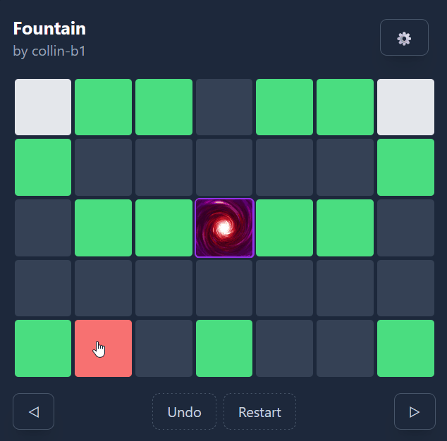
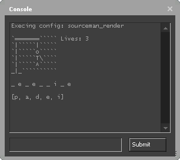

Synergy
Tile-moving puzzle game based on the classic Lunar Landing puzzle. It features 21 base levels and a level editor for creating and sharing custom levels.
Gameboy Emulator (Work in progress)
Gameboy emulator written in C++. It currently only has functionality to read in a ROM and execute opcodes, but I am working on finishing the memory bus and implementing the screen.
SourceMan
Allows you to play hangman inside the console of Source Engine games. It communicates with the game by reading and writing configuration files to the game's cfg folder.
